Action Script Developer Guide To PureMVC
《Action Script Developer Guide To PureMVC》的读书笔记.
很早之前的一篇读书笔记，大部分是将原书内容翻译了一下。
<!– more –>
Action Script Developer Guide To PureMVC
简介
使用 PureMVC 创建一个程序
选择平台
不同的平台意味着，创建 View 的方法以及将 View 和 PureMVC 连接的方法会稍有不同。同样数据在 View 组件中的传递，保存和获取也有不同。不同的面向对象平台，语法也会不同。但是，创建 PureMVC 应用程序使用的方式方法应该大致相同。
写小说和编程
写小说和编程的共同点
两者都需要规划和构造。为人物创建清晰的角色，责任，协作是这两者成功的关键。
CRC 卡片法
CRC 是 Classes, Responsibilities, Collaborations 的缩写。
开发程序
分析和规划面向对象系统中人物的简单方法是创建 CRC 卡片。
在卡片的最上面，写类或接口的名字
在接下来的多行中，写人物的职责
在最后面，写人物的协作者列表（例如：当前人物知道的所有人物，以及知道当前人物的所有人物）
写小说
所有的人物都有一张卡片，用来描述:他们故事的目标，达成目标的过程中会发生的事情，他们的个性是什么，他们的外形是怎样的。
故事发生的地方被称作故事的环境。在为相关的场景打草稿前，描述了组成环境的每个设定的卡片可以用来创建假想的丰富的地方。
人物的视角，他们的场景目标，他们的对手（一个角色，自然力量等等），落到他们身上的阻碍等所有事物都可以被快速地记录在一张卡片上。
卡片方式的好处是写卡片和丢下卡片一样简单，它使得你的思维保持流畅，你不会觉得那样消耗很大。
StoryArchitect 一个写小说的工具
该节描述了开始写一个软件时，明确需求的过程。
- 我们在编码层面做的选择会受我们所知道的和不知道的领域知识的影响。
- 开发者应该知道，在一个新的软件项目中，有两个最重要的输入：
- 用户试图做什么？
- 用户现在是怎样做的？
- 用户试图做什么？
- 需求文档中的特性列表通常无法告诉你很多当前流程中的痛点。以用户的角度理解他们的领域数据和当前的流程，会让你的工作更有意义。
目的陈述(Statement of Purpose)
为了保证所有项目成员，包括用户，对软件的目标有一致的认识。我们需要有意义的、总结性的一句话来描述软件的目标。
例如：StoryArchitect 将允许小说作者做什么？ 这个问题的答案可以作为目标陈述。
StoryArchitect 是一个小说作者的工具，用于整合小说的策划、研究、构想、起草。
确定范围（Determining Scope）
维护范围的一个重要的原则是，对当前版本的必要特性做计划表，按照计划表进行开发。收集高级特性到一个列表，如果在下一个版本中他们比较重要，则在下一版本中将其列入开发计划。
描述领域（Describing the Domain）
当开始规划一个项目时，你需要对领域进行更多的研究。
下面列出 小说 的领域描述：
- 故事是由场景组成的。
Story is made of Scenes.
场景可以看作故事的原子 - 场景可以包含多个草稿，其中的一个草稿被当做当前草稿。
a Scene may have multiple Drafts. - 场景可以被组织为章节
As Stories grow larger, their Scenes are grouped into Chapters. - 章节可以被组织为部分
A more complex fiction Story will have its Chapters further grouped into Parts. - 非小说类的书将章节组织为 Sections
- 电视连续剧包含很多集，它们通常被组织为季（Seasons）
- 无论是故事还是电视连续剧都有对应的人物演员表 （Cast），以及由各种设定组成的环境。
构想用户接口（Imagining the User Interface）
- 应该包含一个简单的输入界面，不需要包含高级的文字装饰和格式，但是需要可以控制字体的大小和间距。
- 可以创建和扩展小说的任何层次的对象。
- 支持非线性的方式来打草稿
- 需要一个按某种方式排序的时间线，从而可以进入故事的任何一点，而且不需要时，可以隐藏该时间线。
- 当创建一个故事或打开一个故事时，应该定位到文字的结尾，方便立刻添加新的内容。
- 可以方便地查看和修改当前选中对象（Story,Part,Chapter 等等）的名字、说明、笔记
- 可以方便地删除对象，可以方便地更改对象的顺序。
因为该程序后续还会移植到移动设备上，所以不要使用移动设备上不好操作的 UI 控件。
存储策略（Persistence Strategy）
最简单的方法是将数据存储在本地，但是，考虑到将来需要在不同客户端编辑内容，还需要将本地内容同步到服务器端。
采用的数据存储结构可以分为两种。一种是表结构，可以用 SQLite 来存储这种数据，用 SQL 来查询修改数据。另一种是树结构，可以用 XML 文件来存储这种结构。考虑到当前项目领域中的大部分对象（Series,Season,Story,Part,Chapter,Scene,Draft）都为树形结构，我们采用 XML 来作为数据存储结构。
搭建启动框架 （Erecting the Startup Scaffolding）
熟悉 PureMVC 结构和标准的启动流程后，搭建启动框架会变得很容易。
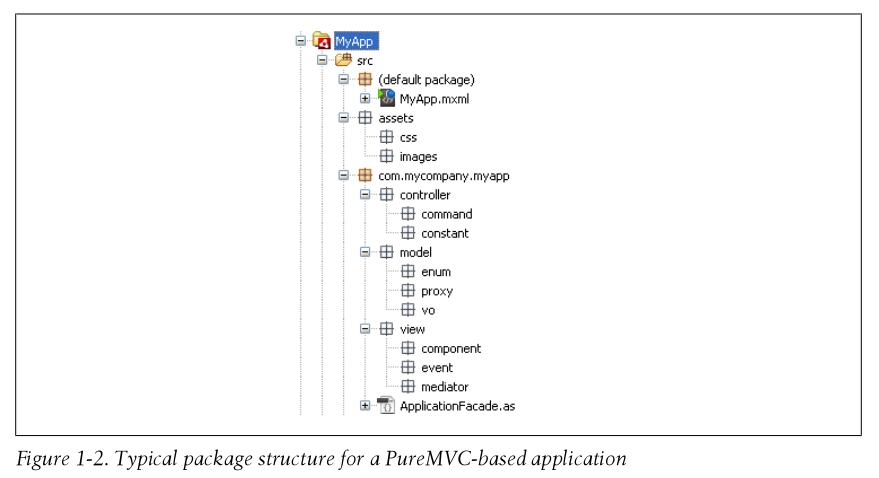
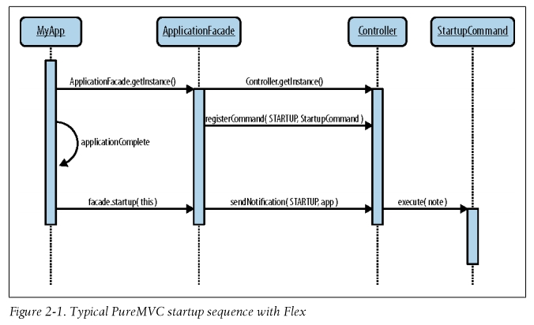
Create an Application Constants Class
AppConstants 类用来存放消息名称常量。这些消息可以被 View 和 Controller 发送或接收。
// Class // AppConstants.as // Code package com.futurescale.sa.controller.constant { /** * Notification Constants for the 'App' (View and Controller tiers) */ public class AppConstants { public static const STARTUP:String = "Startup" } }
TIPS
View 和 Controller 层通常一起被称作应用程序，Model 层应该很容易地抽取出来作为一个独立的库，然后在另一个 App 中复用。
Model 层不应该依赖应用程序，但是应用程序是依赖 Model 层的。应用程序的唯一目的就是将领域模型的细节展示给用户，并且允许用户和模型层交互。所以，View 和 Controller 层是知道 Model 层的角色的。为了保持模型层的独立，应该将模型层发送的消息定义在 Proxys 中，或者一个单独的 ModelConstants 类中。
Create a Startup Command
当初始的界面层级被创建时，首要的业务逻辑是，创建你定义的各部分 PureMVC 元素，并且将他们和应用程序连接。
// Class // StartupCommand.as // Code com.futurescale.sa.controller.command { import org.puremvc.as3.interfaces.INotification; import org.puremvc.as3.patterns.command.SimpleCommand; /** * Startup the PureMVC apparatus, preparing the app for use. */ public class StartupCommand extends SimpleCommand { override public function execute( note:INotification ):void { // Get the application instance from the note var app:StoryArchitect = StoryArchitect( note.getBody() ); // That is it for the scaffolding phase. // The following will be added incrementally later... // Register the Proxys // . // . // . // Register the Mediators // . // . // . } } }
TIPS
需要先注册 Proxys，后注册 Mediators，因为，在 Mediators 中可能会引用 Proxys。
Create the Application Facade
Class ApplicationFacade.as Code package com.futurescale.sa { import com.futurescale.sa.controller.command.StartupCommand; import com.futurescale.sa.controller.constant.AppConstants; import org.puremvc.as3.patterns.facade.Facade; public class ApplicationFacade extends Facade { /** * The Singleton instance factory method. */ public static function getInstance( ) : ApplicationFacade { if ( instance == null ) instance = new ApplicationFacade( ); return instance as ApplicationFacade; } /** * Initialize the Controller and Register the Commands. */ override protected function initializeController():void { super.initializeController(); registerCommand( AppConstants.STARTUP, StartupCommand ); // Register the rest of the Commands incrementally later... // . // . // . } /** * A convenience method for starting up the PureMVC * apparatus from the application. */ public function startup( app:MyApp ):void { sendNotification( AppConstants.STARTUP, app ); } } }
Initialize the Application Facade and call startup()
// Class // StoryArchitect.mxml // Code <?xml version="1.0" encoding="utf-8"?> <s:WindowedApplication // 在应用程序启动完成后，调用 facade.startup(app) applicationComplete="facade.startup(this)" xmlns:fx="http://ns.adobe.com/mxml/2009" xmlns:s="library://ns.adobe.com/flex/spark" xmlns:mx="library://ns.adobe.com/flex/mx"> <fx:Script> <![CDATA[ import com.futurescale.sa.ApplicationFacade; // 在创建 MXML 应用程序过程中，初始化 ApplicationFacade // Initialize the ApplicationFacade during MXML application construction private var facade:ApplicationFacade = ApplicationFacade.getInstance(); ]]> </fx:Script> </s:WindowedApplication>
按照从外到内的顺序进行创建
- 先创建 Value Objects 和 View Components，他们属于应用程序的最外层。
好处之一是，不了解应用程序所用框架的人也可以做创建 Value Objects 和 View Components 的工作。
也保证了 Value Objects、View Components 独立于框架，使得他们具有复用性。 接下来创建 PureMVC 的各部分元素
- 首先，创建 Proxys，用它作为应用程序的数据源
- 其次，创建 Mediators，它可以为 View Components 提供数据
- 最后，创建 Commands
- TIPS:
- 首先，创建 Proxys，用它作为应用程序的数据源
Step 1: Value Objects
创建好启动框架后，首先要做的事情是创建 ValueObjects。思考领域模型并为你想到的每个实体创建 ValueObjects。定义一些枚举或常量来表示合法的属性值。
- TIPS:
通常在 ValueObjects 类名称后面添加"VO"后缀，来明确类的角色，也可以避免和 View Components 类重名。
Step 2: View Components
依据领域模型设计和构建适合使用需求的 View Components。这个过程中，就会了解 View Components 需要什么，这些需求从父级 View Components 获得，还是从 Mediator 获得。将公共的属性暴露给父级 View Components 或 Mediator，将 View Components 自己的职责封装起来。
在这个阶段，你可以用前面定义的 ValueObjects 的虚拟数据来填充 View Components，进行测试，这样会提前发现某些 Value Objects 可能需要调整。
TIPS:
- View Components 不能依赖任何框架的角色。
- 注意将大的 View Components 划分为小的 View Components，让 View Components 保持简单，从而使其实现更容易理解和修改。
- View Components 的命名应该按照他们的功能来命名，而不是他们的实现。因为，View Components 的实现可能会被修改。
例如： 卡牌集合 一开始使用 ListView 来实现，后来改为用 TableView 来实现，所以 CardSet 比 CardsList 或 CardsTable 更好。
- View Components 不能依赖任何框架的角色。
Step 3: Proxys
Proxys 决定了 Value Objects 的存储和访问。
Proxys 有很多用处，可以使用它来访问 FlashVars 和 URL 的参数，本地共享对象，加密后的本地存储，文件系统，web 服务器，实时消息协议通道，甚至是当前应用程序状态的临时数据（尽管这些数据不会被当作领域模型的一部分）
Proxy 类通常暴露一个 ValueObject 或一个集合该集合中存储一系列同一类型的 ValueObject。
一个 Proxy 可以和另一个 Proxy 协作来维护相关数据的完整性，尽管这些数据被分开管理。这降低了每个 Proxy 的复杂度。
- TIPS:
通常 Proxy 的命名使用“Proxy”做后缀，Proxy 的名字和它所提供的数据相同。
例如：HeroProxy 提供了 HeroVO 数据。
Step 4: Mediators
并不是所有的 View Component 都需要 Mediator。在视图树中的某些地方，数据或新的 View Component 需要注入和取出，这就是需要调解的地方。
可以为根 View Component 创建 Mediator，而子 View Component 由根 View Component 来处理。
Mediator 的通讯是双向的，它不仅关心它所管理的 View Component 发出的消息，而且也关心系统其他部分发送的和它的 View Component 相关的消息。
- TIPS:
通常 Mediator 的命名使用"Mediator"后缀。
例如：CardSetMediator
Step 5: Commands
除了 StartupCommand 以外，当你创建某些 Commands 时，PureMVC 的其他大部分角色已经完善了。
- TIPS:
通常 Command 的命名使用“Command”后缀，名称按照它实现的操作来命名。例如：DeleteCardCommand
为领域建模
Designing the Schema
通盘考虑 StoryArchitect 应用程序领域模型的各个对象后，我们计划使用 XML 文件来保持数据。一开始会将文件保存在本地，再以后版本中，会将文件同步到服务器。随后，我们需要将 XML 的操作封装到 Value Objects 内部。所以，我们的逻辑起点是设计 XML 的模式（schema）.
如果我们将数据保存到数据库，我们首先应该设计数据库的模式，设计表格和索引。
- TIPS:
使用 Value Objects 来封装 XML 对象的模式有以下几个优点：
- 降低 Proxy 的压力，避免 Proxy 需要知道 VOs 的所有一切。（XML 相关的操作就不需要在 Proxy 中实现了）
- 不需要创建操作 XML 的 utility/helper classes(这些类角色松散，增加了依赖和复杂度)
- 可以让你快速处理已经存在或者是新设计的服务器 API 返回的结果。
复审领域模型实体对象 Reviewing the Domain Model Entities
下面是 StoryArchitect 领域模型中的实体对象：
| Entities | 名称 | 说明 |
|---|---|---|
| Note | 备注/笔记 | 一个 URL 或/和 关于任何实体的任意形式的文本 |
| Setting | 设定 | 故事发生的地方 |
| Milieu | 环境 | 和一个故事或连续剧相关的一系列设定（Setting） |
| Character | 角色 | 故事或连续剧中的一个个体 |
| Cast | 演员表 | 和一个故事或连续剧相关的一系列角色（Character） |
| Draft | 草稿 | 场景原始文字的一个版本 |
| Scene | 场景 | 故事的原子元素，可以包含多个草稿 |
| Chapter | 章节 | 故事或部分中的一组场景，即一组场景可以被划分为一章 |
| Part | 部分 | 故事中的一组章节，即一组章节可以被划分为一部分 |
| Story | 故事 | 多个场景的集合，即一组场景可以组成一个故事,也可以被组织到章节或部分中 |
| Season | 季 | 连续剧中的多个故事一起被划分为一季，即多集电视连续剧可以组成一季 |
| Series | 连续剧 | 一组故事，它们使用相同的演员表和环境，被称为连续剧 |
Creating the Schema
ValueObject
ValueObject 是永远不会被创建的元素，但是其他元素会继承它的属性和子元素。
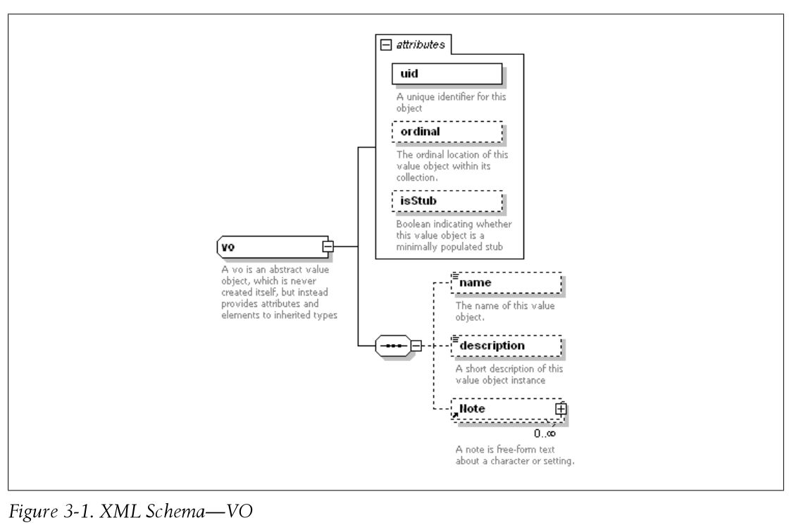
Note
Note 不从 VO 扩展，因为它被包含在 VO 内，而且不需要任何 VO 的属性。
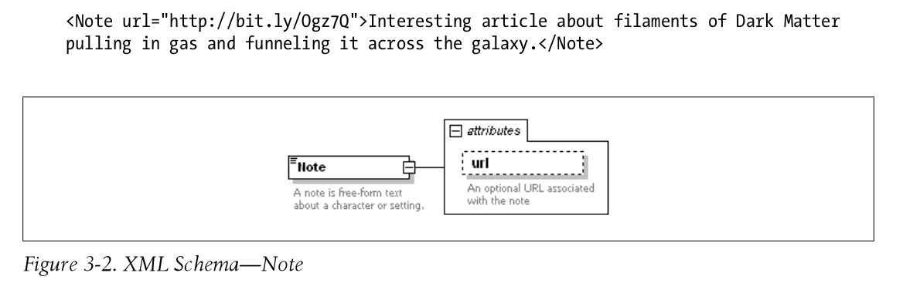
Setting
Setting 从 VO 继承了所有它需要的属性.
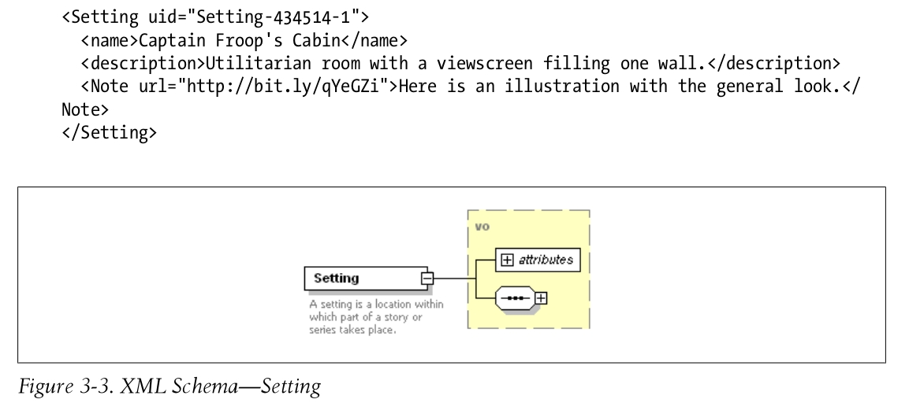
Milieu
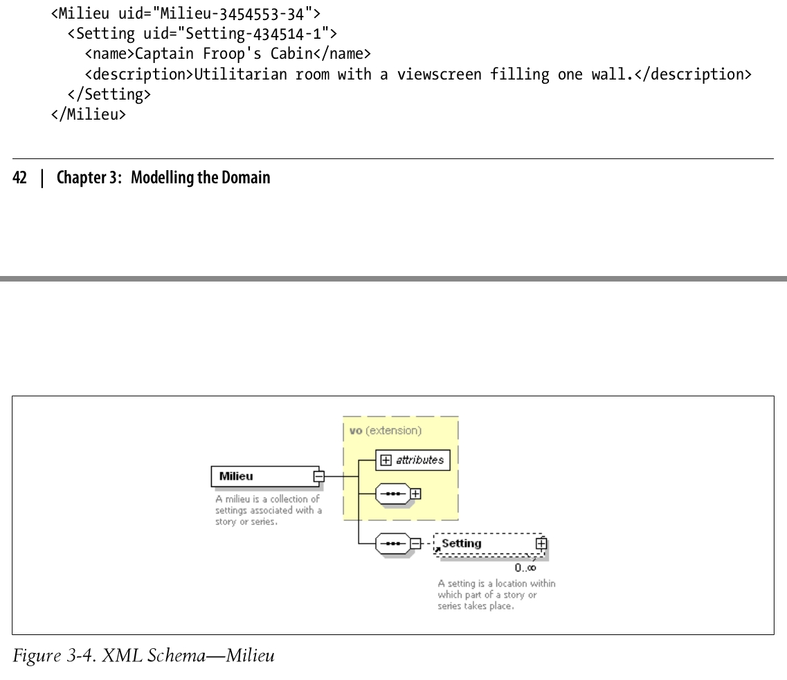
Character
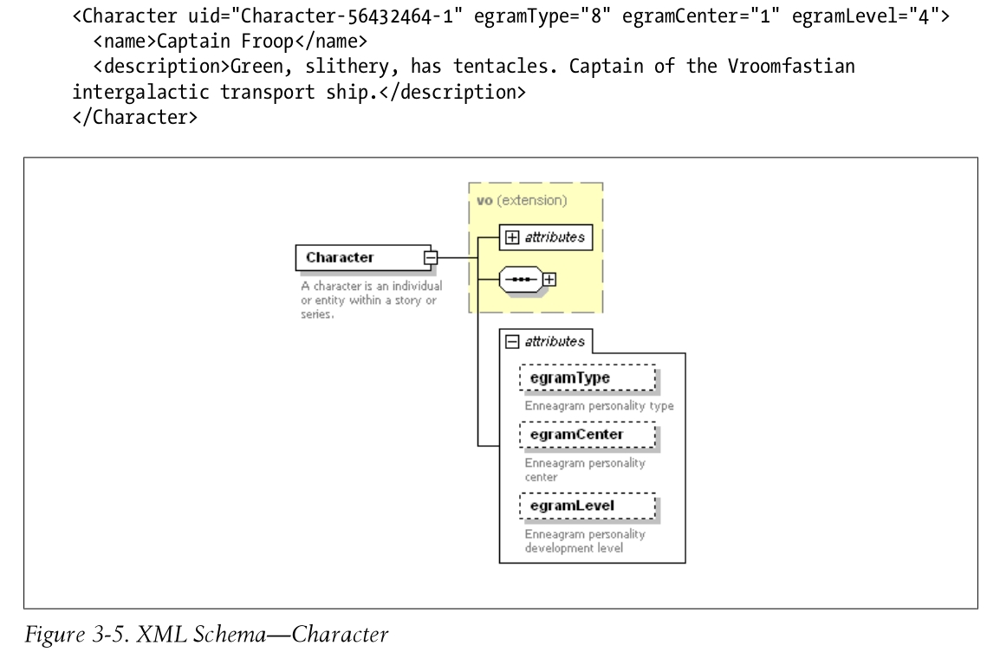
Cast

Draft
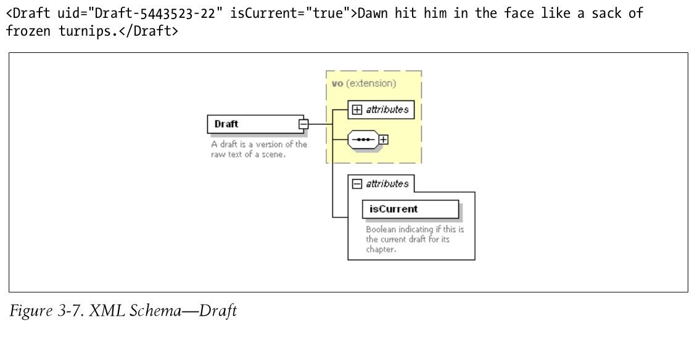
Scene
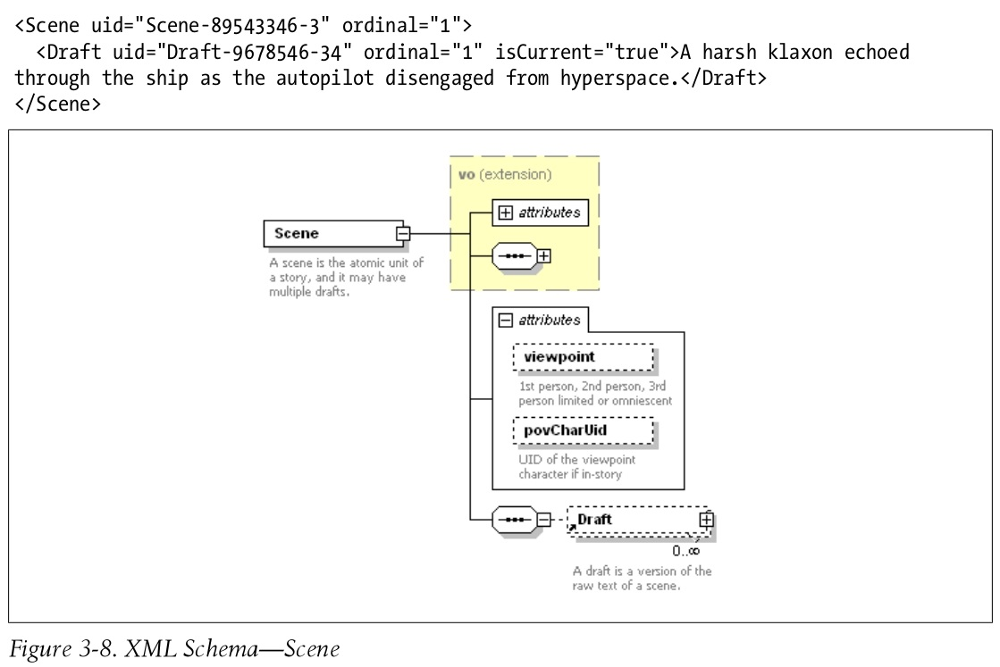
Chapter

Part
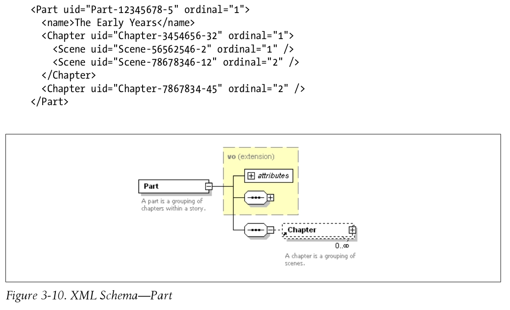
Story
<Story uid="Story-12345678-1" ordinal="1" isStub="false" type="0"> <name>Untitled Scifi Story</name> <description>The Vroomfastians have been traveling the Dark Matter Highway for quite awhile. They've just pulled off at our exit, and Man are they hungry!</description> <Note url="http://bit.ly/Ogz7Q">Interesting article about filaments of Dark Matter pulling in gas and funneling it across the galaxy.</Note> <Note>How about "Once, Upon the Dark Matter Highway" for a title?</Note> <Cast/> <Milieu/> <Scene uid="Scene-89543346-3" ordinal="1"> <Draft uid="Draft-5465344-43" ordinal="1" isCurrent="false">It was a dark and stormy night.</Draft> <Draft uid="Draft-5443523-22" ordinal="2" isCurrent="false">Dawn hit him in the face like a sack of frozen turnips.</Draft> <Draft uid="Draft-9678546-34" ordinal="3" isCurrent="true">A harsh klaxon echoed through the ship as the autopilot disengaged from hyperspace.</Draft> </Scene> <Scene uid="Scene-56562546-2" ordinal="2" /> <Scene uid="Scene-78678346-12" ordinal="3" /> </Story>
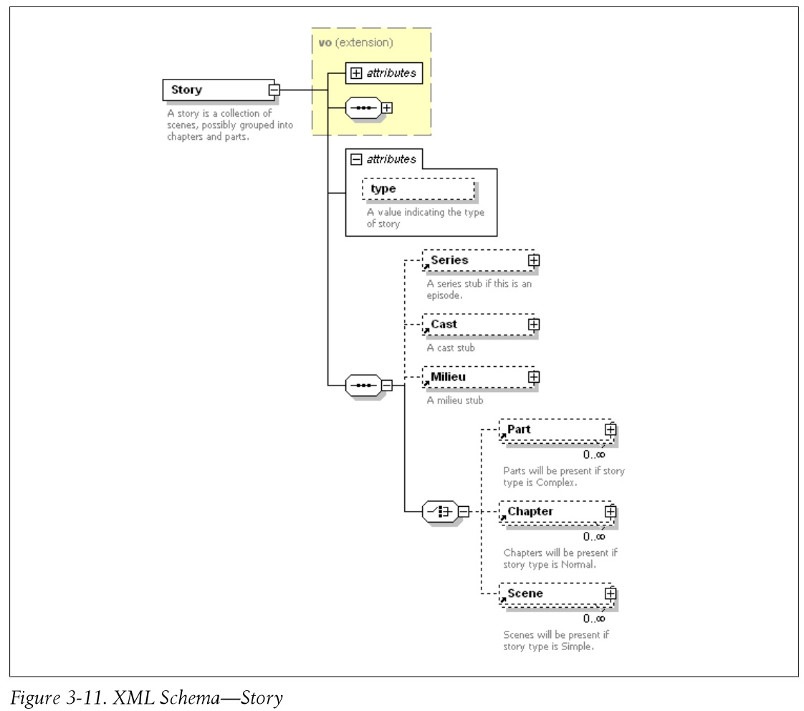
Season
<Season uid="Season-43534573-1" ordinal="1"> <Story uid="Story-56562546-41" ordinal="1" /> <Story uid="Story-78678346-24" ordinal="2" /> </Story
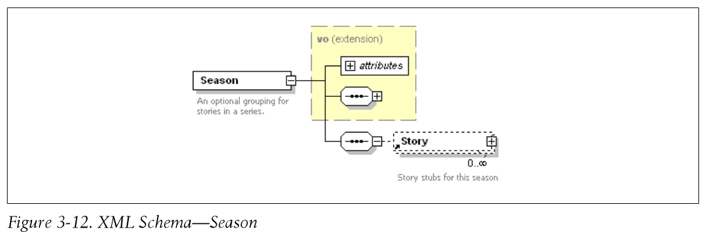
Series
<Series uid="Story-12345678-1" ordinal="1" isStub="false" useSeasons="false"> <name>Untitled Scifi Series</name> <description>A young boy becomes a central figure in a saga of galactic intrigue when he and his father are abducted by aliens and given a powerful secret to keep. </description> <Note url="http://bit.ly/Ogz7Q">Interesting article about filaments of Dark Matter pulling in gas and funneling it across the galaxy.</Note> <Cast/> <Milieu/> <Story uid="Story-56562546-2" ordinal="1"> <name>Once, Upon the Dark Matter Highway</name> <description>The Vroomfastians have been traveling the Dark Matter Highway for quite awhile. They've just pulled off at our exit, and Man are they hungry! </description> </Story> <Story uid="Scene-78678346-12" ordinal="2" /> </Series>
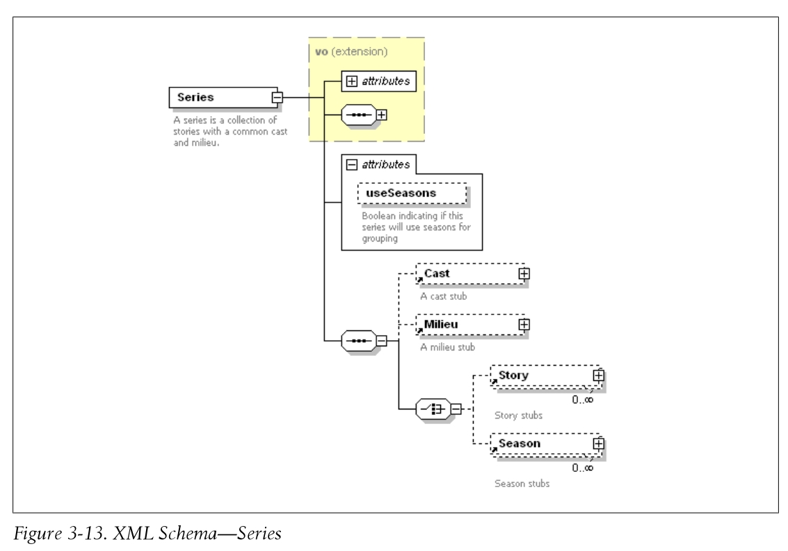
Creating the Value Objects
- TIPS
创建的 ValueObjects 不能引用任何 PureMVC 的类，在你的 PureMVC 应用程序外，应该能够独立的测试和复用这些 ValueObjects。
Creating the Enums
Enums 也是一类领域模型实体对象。例如：游戏中卡牌、装备、怪物的品质 1-橙卡，2-紫卡，3-蓝卡，4-绿卡，5-白卡。
将 Enum 值转化为名称的操作、判断相等的操作，封装在 Enum 内部，提高 Enum 的内聚，减少 Enum 的依赖。
TODO 是否存在某些情况，Enum 需要多个名字？如果存在，Enum 应该如何设计来满足这种需求?
Enum package com.futurescale.sa.model.enum { /** * A base class for enumerations */ [Bindable] public class Enum { public var name:String; public var ordinal:Number; public var description:String; public function Enum( ordinal:Number, name:String, description:String ) { this.name = name; this.ordinal = ordinal; this.description = description; } /** * Compare to another enum instance */ public function equals( enum:Enum ):Boolean { return ( ( this.name == enum.name ) && ( this.ordinal == enum.ordinal ) && ( this.description == enum.description ) ); } } } StoryTypeEnum package com.futurescale.sa.model.enum { import mx.collections.ArrayCollection; /** * An enumeration of Story types. */ public class StoryTypeEnum extends Enum { public static const NONE:StoryTypeEnum = new StoryTypeEnum( -1, "--None Selected--", "Choose a Story Type" ); public static const SIMPLE:StoryTypeEnum = new StoryTypeEnum( 0, "Simple", "Scenes only" ); public static const NORMAL:StoryTypeEnum = new StoryTypeEnum( 1, "Normal", "Chapters and Scenes" ); public static const COMPLEX:StoryTypeEnum = new StoryTypeEnum( 2, "Complex", "Chapters, Parts, and Scenes" ); public function StoryTypeEnum( ordinal:Number, name:String, description:String ) { super( ordinal, name, description ); } public static function get list():Array { return [ SIMPLE, NORMAL, COMPLEX ]; } public static function get comboList():ArrayCollection { return new ArrayCollection( [ NONE ].concat( list ) ); } override public function equals( enum:Enum ):Boolean { return ( enum is StoryTypeEnum && super.equals( enum ) ); } } }
Testing the Entities
ValueObjects 是整个应用程序的基石。其他代码的作用只是暴露 Value Objects 类的实例给用户，让他们进行操作和持有。因为 Value Objects 封装了序列化和反序列化逻辑，所以在继续完善程序之前，需要对 Value Objects 进行测试。
// NoteVOTest package com.futurescale.sa.model.vo.test { import com.futurescale.sa.model.vo.NoteVO; import flexunit.framework.Assert; public class NoteVOTest { [Test] public function testNoteVOWithXML():void { var url:String = "http://google.com"; var text:String = "Some stuff I'm keeping in the cloud."; var xml:XML = <Note url={url}>{text}</Note>; var vo:NoteVO = new NoteVO( xml ); if (! vo is NoteVO ) Assert.fail("Construction with xml failed"); if ( vo.text != text ) Assert.fail("text match failed"); if ( vo.url != url ) Assert.fail("url match failed"); } [Test] public function testNoteVOWithoutXML():void { var vo:NoteVO = new NoteVO(); if (! vo is NoteVO ) Assert.fail("Construction without xml failed"); if ( vo.xml.localName() != NoteVO.ELEMENT ) Assert.fail("default xml not provided"); } [Test] public function testSet_text():void { var text:String = "Bunnies are nice!"; var vo:NoteVO = new NoteVO(); vo.text = text; if ( vo.text != text ) Assert.fail("text match failed"); } [Test] public function testSet_url():void { var url:String = "http://puremvc.org"; var vo:NoteVO = new NoteVO(); vo.url = url; if ( vo.url != url ) Assert.fail("url match failed"); } [Test] public function testSet_xml():void { var url:String = "http://puremvc.org"; var text:String = "Code at the Speed of Thought!"; var xml:XML = <Note url={url}>{text}</Note>; var vo:NoteVO = new NoteVO(); vo.xml = xml; if ( vo.text != text ) Assert.fail("text match failed"); if ( vo.url != url ) Assert.fail("url match failed"); } } }
实现用户界面
组成用户界面的类应该封装他们自己的行为和表现。当它们需要和外部通讯时，应该只是发布事件、或者设置属性、或者调用它们子控件的方法。
实现 View Components 的时候，你应该暴露事件、属性和交互方法这些 API，隐藏 View Components 的内部实现。
View Components 暴露属性来接收数据；发送事件来传递用户的意图；查看共享选中内容并保持其一致性。它只和自己的子节点，以及赋给它的数据进行交互(这些数据是通过父节点、或者 Mediator 赋给它的)。
Application
Class
StoryArchitect.mxml
Responsibilities
- 声明和布局 Chooser 和 Editor View Components
- 初始化 PureMVC Facade
- 触发 PureMVC 的启动流程，传递 app 的引用
- 为 Starting，Chooser 和 Editor 定义三种启动模式
- 暴露一个 bindable 公共属性，来设置字数
- 暴露一个 bindable 公共属性，来设置显示模式
- 暴露一个 bindable 公共属性，来设置 SelectionContxt
- 提供 SelectionContxt 给子节点
- 基于显示模式来控制可见性和布局
- 在状态栏展示显示模式（Editor 模式下，还要显示字数）
- 监听 Editor 组件的 ReportWordCount AppEvents，当该事件发生时，更新 wordCount 属性
Collaborations
Code
<?xml version="1.0" encoding="utf-8"?> <!-- STORY ARCHITECT APPLICATION --> <s:WindowedApplication xmlns:editor="com.futurescale.sa.view.component.editor.*" xmlns:chooser="com.futurescale.sa.view.component.chooser.*" xmlns:s="library://ns.adobe.com/flex/spark" xmlns:fx="http://ns.adobe.com/mxml/2009" applicationComplete="facade.startup(this); // startup app" minWidth="800" minHeight="600"> <fx:Script> <![CDATA[ import com.futurescale.sa.ApplicationFacade; import com.futurescale.sa.view.context.SelectionContext; public static const MODE_STARTING:String = "Starting..."; public static const MODE_CHOOSER:String = "Chooser"; public static const MODE_EDITOR:String = "Editor"; // Selection context shared between View Components. [Bindable] public var context:SelectionContext; // Word Count (displayed on status bar in Editor mode) [Bindable] public var wordCount:String = ""; // Display Mode (Chooser/Editor) [Bindable] private var mode:String = MODE_STARTING; // Initialize the PureMVC Facade private var facade:ApplicationFacade = ApplicationFacade.getInstance(); /** * Set the application display mode, and if showing * the Editor, initialize the word count from the * selected Story. */ public function setMode( mode:String ):void { this.mode=mode; if (mode == MODE_EDITOR && context.story) { wordCount = context.story.wordCount.toString(); } else { wordCount = ""; } } </fx:Script> <!-- LAYOUT --> <s:layout> <s:VerticalLayout horizontalAlign="center"/> </s:layout> <!-- STATUS BAR --> <s:status>{mode}{(wordCount != "")?" | "+wordCount+" words":""}</s:status> <!-- CHOOSER --> <chooser:Chooser id="chooser" width="100%" height="100%" includeInLayout="{mode == MODE_CHOOSER}" visible="{mode == MODE_CHOOSER}"/> <!-- EDITOR --> <editor:Editor id="editor" width="100%" height="100%" includeInLayout="{mode == MODE_EDITOR}" visible="{mode == MODE_EDITOR}" <!-- 在这里监听 reportWordCount 事件 --> reportWordCount="wordCount=String(event.data)" context="{context}"/> </s:WindowedApplication>
Other View Components
The Chooser
The Story Chooser
The Editor
The Editor Controls
The Details Component
The Item Info Component
The Notes Component
The Timeline Component
The Story Tile
The Part Tile
The Chapter Tile
The Scene Tile
The Draft Tile
The Selection Context
Class
SelectionContext.as
Responsibilities
- 暴露公共的方法来选择各种各样的 ValueObject 子类对象.
选中操作伴随着，选中其他相关 ValueObject 对象 和 取消选中其他相关 ValueObject 对象。 - 通过 selectedItem 来记录选中操作选择的对象。selectedItem 是 bindable 的
- 暴露 bindable 的属性来读取当前选中的 CastVO,ChapterVO,CharacterVO,DraftVO,MilieuVO,NoteVO,PartVO,SceneVO,SeasonVO,SeriesVO,SettingVO,StoryVO 等等。
Collaborations
Code
package com.futurescale.sa.view.context { import com.futurescale.sa.model.vo.CastVO; // 省略一部分 import ...... import com.futurescale.sa.model.vo.ValueObject; /** * The currently selected items in the UI. * * When calling the select methods, items * below the selection in the Series/Story * hierarchy as well as the selected Note, * Cast and Milieu are automatically nulled * as appropriate. */ [Bindable] public class SelectionContext { public static const NAME:String = "SelectionContext"; public function selectSeries( series:SeriesVO ):void { this.selectedItem = series; this.series = series; this.season = null; this.story = null; this.part = null; this.chapter = null; this.scene = null; this.draft = null; this.note = null; if ( series ) { this.cast = series.cast; this.milieu = series.milieu; this.setting = null; this.character = null; } // 此处省略一部分代码...... public function selectNote( note:NoteVO ):void { this.note = note; } public function selectCharacter( character:CharacterVO ):void { this.selectedItem = character; this.character = character; this.note = null; } public function selectSetting( setting:SettingVO ):void { this.selectedItem = setting; this.setting = setting; this.note = null; } public var selectedText:String; public var selectedItem:ValueObject; public var series:SeriesVO; public var season:SeasonVO; public var story:StoryVO; public var part:PartVO; public var chapter:ChapterVO; public var scene:SceneVO; public var draft:DraftVO; public var note:NoteVO; public var cast:CastVO; public var milieu:MilieuVO; public var character:CharacterVO; public var setting:SettingVO; } }
The App Event
Class
AppEvent.as
Responsibilities
用 AppEvent 来创建两部分协议的其中一部分。AppEvent 定义了所有从用户界面发起的请求，这些请求在其他地方（其他 ViewCommpoents 或者 Mediators 和 Commands）被处理。两部分协议的另外一部分是 AppConstants，其中定义了消息名称，它们由 View 层和 Controller 层共用。
AppEvent 和 AppConstants 中的一些名称会相同，但是不要将这两个文件合为一个文件，因为 AppEvent 是定义和用户界面相关的事件名称，而 AppConstants 定义的是 PureMVC 系统中用到的消息名称，分开两者可以让 View Components 独立于 PureMVC。
- 扩展 Flash Event 类
- 定义事件类型
- 为数据和相关数据定义 Object 类型的属性
- 在构造函数中接受 type data related 参数来设置相关的属性
Collaborations
Code
package com.futurescale.sa.view.event { import flash.events.Event; public class AppEvent extends Event { // Components of the AppEvent types private static const ADD:String = "add"; private static const DELETE:String = "delete"; private static const MANAGE:String = "manage"; // ...... 省略 // AppEvent types public static const ADD_SERIES:String = ADD+SERIES; public static const ADD_SEASON:String = ADD+SEASON; public static const ADD_EPISODE:String = ADD+EPISODE; // ...... 省略 public static const DELETE_SERIES:String = DELETE+SERIES; public static const DELETE_SEASON:String = DELETE+SEASON; public static const DELETE_EPISODE:String = DELETE+EPISODE; // ...... 省略 public var data:Object; // optional data object public var related:Object; // optional related data object public function AppEvent( type:String, data:Object=null, related:Object=null ) { super(type, true, true); this.data = data; this.related = related; } } }
为模型实现 Proxys
- Proxy 类非常简单，它有一些生命周期函数，在注册和删除时，这些函数会被调用；它包含一个 Object 类型的数据属性，以及对应的 getData 和 setData 方法；它可以发送消息，来单向通知 Mediators 或触发 Commands 执行。
- Proxy 应该不关心任何 View 或 Controller 层的类，即不要再 Proxy 中引用任何 View 或 Controller 层的对象。
- Proxy 通常是长期存在的角色，他们在启动时被注册，并且在运行过程中一直不被释放。那些被动态创建的 Proxy 实例通常为临时对象。
- 将 PureMVC 的 Model 想象为一个银行的地下室，而 Proxy 为其中的保险箱。每个保险箱有一个唯一的 key，你可以在保险箱中存储任何你想存储的东西。
- Proxy 包含一个 facade 属性，这是一个 ApplicationFacade 的引用。可以用来注册、删除、获取其他 Proxys 甚至 Mediator。该属性是因为 Proxy 从 Notifier 派生而获得的，所以 Proxy 还可以直接调用 sendNotification()发送消息。切记，不要使用 facade 属性来操作和 View 或 Controller 层的对象。
Proxy Life Cycle
- 你写的大部分 Proxy 子类，都是为了和远程服务器或文件系统交换数据，执行认证，执行 RTMP 通道通讯，执行 Socket 通讯等。对于系统的剩余部分，Proxys 相当于数据保存者和外面世界的网关。
- Proxy 通常在模型准备阶段注册一次，一般时在 StartupCommand 中，在 Mediators 注册之前。
- 在运行过程中，Commands 和 Mediators 会使用名称来获取他们需要的 Proxys，然后调用 Proxys 的方法，设置或获取 Proxys 持有的数据。Proxys 不能接收消息。
- 有时候，为了保证数据的完整性，Proxys 之间需要相互通讯。一旦注册，他们可以像 Meditors 和 Commands 一样，获取某个 Proxy，然后和它交互。但是，这需要在 StartupCommand 中保证 Proxys 的注册顺序，从而加大了 StartupCommand 的维护难度。所以，当一个 Proxy 需要和另外一个 Proxy 通讯时，最好是在 Proxy 的构造函数中 require 它所依赖的其他 Proxys。
- 放在 Proxy 构造函数中做的事情，应该移到 onRegister()中，因为在构造函数执行完以后，Proxy 并没有注册，此时通过 facade 无法获取到 Proxy。
- 如果 Proxy 是动态创建和添加的，你需要在 Proxy 的 onRemove()事件中发送消息给 Mediators，让他们设置该 Proxy 的引用为 null
重新考察持久化策略
同步的工作方式为 数据请求发出后，阻塞等待数据返回，所需数据返回后，直接对数据进行操作。其优点是代码比较简单。
异步的工作方式为 数据请求发出后，立即返回做其他事情，等数据返回后，再对数据进行操作。其优点是程序不会阻塞。
在 StoryAchitect 中，应用程序采用同步的方式访问本地文件，本地文件镜像到服务器采用异步的方式。这样就可以充分利用同步和异步各自的优点。
在 StoryAchitect 中，添加 index.xml 来存放实体元素的简介信息。例如：存储新的 StoryVO 时，可以将全部数据存储在一个数据 xml 文件中，将简介数据存储在一个索引 xml 文件中。这样就避免了，程序需要加载所有数据 xml 文件。
创建 Proxys
- 到目前为止，我们确定需要创建下面四个 Proxy 子类：CastProxy,MilieuProxy,SeriesProxy,StoryProxy.我们知道这些类之间存在依赖关系，并且我们允许他们相互协作来管理这些依赖关系，这些类也都会对系统文件 I/O 和索引做很多相同的事情。
- OOP 的一个经典决策点是：我们应该通过继承方式还是组合方式来添加这些相同的功能？有些人认为你应该总是采用某个而不是另一个，其实，你应该根据当前遇到的问题来选择合适的策略。Delegate 模式是组合方式的一个实例。如果你希望改变这些相同的功能，那么组合方式是一个好的选择，你只要重新设置 Delegate，就可以改变功能。组合描述的是 contain-a 的关系，派生描述的是 is-a 的关系，所以组合更加灵活。
- StoryAchitect 中采用了继承方式来实现 Proxy 中的公共功能，当然也可以采用组合的方式来实现，在 ProxyHelper 类中实现所有公共的功能，然后，在各个 Proxy 子类中调用 ProxyHelper 的方法。
AbstractProxy
Class
AbstractProxy.as
Responsibilities
- 提供一个函数来连接到一个文件夹，该文件夹名称由子类提供。如果文件夹不存在就创建它，并且保证文件夹中存在一个索引文件，即使文件夹中不包含任何条目。
- 提供增加、保存、删除 ValueObject 的方法，自动更新文件系统和内存中对应的索引。
- 提供函数返回在文件夹索引文件中保存的 ValueObject 简介内容的集合
- 保证索引按照 ValueObject 的名称排序
Collaborations
AbstractProxy 知道的元素 ：AbstractProxy 知道 Flash 的 File,FileMode 以及 FileStream 类来执行文件系统 I/O.它还知道 ArrayCollection,Sort 以及 SortField 来来创建基于名字排序的索引。它还知道 PureMVC 的 Proxy 类，以及我们定义的 ValueObject 类。
知道 AbstractProxy 的元素：AbstractProxy 只被它的子类所知道
Code
package com.futurescale.sa.model.proxy { import com.futurescale.sa.model.vo.ValueObject; import flash.filesystem.File; import flash.filesystem.FileMode; import flash.filesystem.FileStream; import mx.collections.ArrayCollection; import org.puremvc.as3.patterns.proxy.Proxy; import spark.collections.Sort; import spark.collections.SortField; /** * Provides subclasses with a simple VO-to-disk * API with automatic name-sorted indexing. */ public class AbstractProxy extends Proxy { // Extension for files private const FILE_EXT:String = ".xml"; // Index filename private const INDEX:String = "index"+FILE_EXT; // The folder to access. Set by connectToFolder() private var folder:File; /** * Constructor. * * Name provided by subclass, data property * (used for the index of stubbed VOs) is * initialized to ArrayCollection. */ public function AbstractProxy( name:String ) { super( name, new ArrayCollection() ); } /** * The name-sorted index of stubbed VOs. */ public function get index():ArrayCollection { return data as ArrayCollection; } /** * Abstract factory method to create stubbed VOs * for the index. Must be overridden in subclass * and return a stubbed VO of the appropriate type * for inclusion in the index. */ protected function getVoInstance( xml:XML ):ValueObject { return null; } /** * Sets the protected folder property. * * Also, if the folder does not exist, it is * created and an empty index written. Otherwise, * the index is read from the existing folder. */ protected function connectToFolder( name:String ):void { folder = File.applicationStorageDirectory.resolvePath( name ); if ( !folder.exists ) { folder.createDirectory(); writeIndex(); } else { readIndex(); } } /** * Write the Value Object's XML property to a file * and update the index on disk and in memory. */ protected function writeVO( vo:ValueObject ):void { var file:File = getFile( vo ); writeFile( file, vo.xml ); updateIndex( vo ); } /** *From the stub passed in, read the corresponding VO * from the disk and return the XML. */ protected function readVO( voStub:ValueObject ):XML { var file:File = getFile( voStub ); return XML ( readFile( file ) ); } /** * From the VO passed in, delete the corresponding VO * from the disk and update the index. */ protected function deleteVO( vo:ValueObject ):void { var file:File = getFile( vo ); if ( file.exists ) file.deleteFile(); updateIndex( vo, true ); } /** * Read the index XML from disk and create the * in memory index of stubbed VOs. */ private function readIndex():void { // read in the index XML var file:File = folder.resolvePath( INDEX ); var xml:XML = readFile( file ); // build the index from the XML var ac:ArrayCollection = new ArrayCollection(); for each ( var ix:XML in xml.children() ) { var vo:ValueObject = getVoInstance( ix ); ac.addItem( vo ); } // Sort the index by name var sort:Sort = new Sort(); var field:SortField = new SortField( "name" ); sort.fields = [ field ]; ac.sort = sort; ac.refresh(); // set the index as the proxy data setData( ac ); } /** * Read the in memory index of stubbed VOs to * the index XML file on disk. */ private function writeIndex():void { var file:File = folder.resolvePath( INDEX ); var xml:XML = <index></index>; var ivo:ValueObject; for ( var i:int=0; i < index.length; i++ ){ ivo = ValueObject( index.getItemAt(i) ); xml.appendChild( ivo.getStub() ); } writeFile( file, xml ); } /** * Update the in memory index of stubbed VOs, replacing or * removing the stubbed VO passed in, sort the index, and * write the index XML file on disk. */ private function updateIndex( vo:ValueObject, removing:Boolean=false ):void { // Find and remove existing item if present for ( var i:int=0; i < index.length; i++ ){ var ivo:ValueObject = ValueObject( index.getItemAt(i) ); if ( ivo.uid == vo.uid ) { index.removeItemAt( i ); break; } } // add the new or updated item to index if not removing if ( ! removing ) index.addItem( getVoInstance( vo.getStub() ) ); // re-sort the index index.refresh(); // persist the index writeIndex(); } /** * Write xml to a file. */ private function writeFile( file:File, xml:XML ):void { var stream:FileStream = new FileStream() stream.open( file, FileMode.WRITE ); stream.writeUTFBytes( xml ); stream.close(); } /** * Read XML from a file and return it. */ private function readFile( file:File ):XML { var stream:FileStream = new FileStream() stream.open( file, FileMode.READ ); var xml:XML = XML( stream.readUTFBytes( stream.bytesAvailable ) ); stream.close(); return xml; } /** * Get the corresponding File object for a given VO. */ private function getFile( vo:ValueObject ):File { var filename:String = vo.uid + FILE_EXT; return folder.resolvePath( filename ); } } }
其他 Proxy
- CastProxy
- MilieuProxy
- StoryProxy
- SeriesProxy
为视图实现 Mediators
- 就像前面说的，通讯是个双向街道。这是 Mediator 存在的核心原因，Mediator 用来促进 View Component 和应用程序的剩余部分之间的双向通讯。所以，Mediator 的大部分职责都是处理来自 ViewComponent 的事件，以及处理来自应用程序剩余部分的消息。这样就解除了应用程序和 ViewComponents 之间的耦合。
- Mediator 类有一个 facade 属性，它是 ApplicationFacade 的引用。使用 facade 属性可以注册、删除、获取 Meditor，Proxys 以及 Commands。这个属性是通过继承 Notifier 来获得的，所以 Meditor 还可以调用 sendNotification。切记，不要使用 facade 来获取其他 Mediators，这样会让 Mediators 之间耦合在一起。
Mediator Life Cycle
- Mediator 获得它的 ViewComponent 的方式包括：
- 创建 Mediator 时，将 ViewComponent 传递给 Mediator 的构造函数。
- Mediator 自己创建 ViewComponent
- Mediator 注册之后，从某个消息接收到 ViewComponent
等等
- 通常 Mediator 从被注册开始，在运行过程中长期存在。
- 在 Mediator 的 onRegister()方法中，我们会监听 ViewComponent 发送给 Mediator 的事件；获取 Mediator 要交互的 Proxys。
- 在 Mediator 的 onRemove()方法中，移除对 Proxys 的引用
和 ViewComponent 的交互
- 在实现一个 ViewComponent 的时候，我们不会到达应用程序的内部，获取一个 Proxy 来得到所需的数据。我们会为 ViewComponent 暴露属性和方法，这样数据就可以传递到 ViewComponent 内部。同样的在系统的其他地方，我们也不会直接获取一个 ViewCompoent，然后对它直接进行操作。我们会发送一个消息给它的 Mediator，由 Mediator 来通知它。
- 一个 Mediator 它应该调节，而不是思考。将思考的工作留给 Commands，它们只是将消息传递走。
依赖注入 Dependency Injection
很多人认为 PureMVC 缺乏 DI 特性，其实 Mediator 做的事情就是依赖注入。通过函数调用或设置属性它将 VO 传递给 ViewComponent。ViewComponent 依赖于 ValueObject 来执行工作。Mediator 将 ValueObject 注入到 ViewComponent 中。
PureMVC 缺乏的是编译级别的依赖注入。例如 Flex 的数据绑定就是编译器依赖注入。而编译级别的依赖注入，会降低应用程序的可移植性。
和应用程序的交互
- 通过 listNotificationInterests()来列出 Mediator 感兴趣的消息
- 通过 handleNotification()来相应接收到的消息
什么时候你发送一个消息给 Command 来处理，而什么时候你直接和 Proxys 交互？
- 如果你要执行逻辑，传递或验证数据或者是和多个 Proxy 通讯，最好是将这些操作放在一个 Command 中，然后，通过 Mediator 发送一个消息来触发 Command 的执行。
当你需要在很多地方触发相同的功能时，也采用这种方式。
Notification 和 Command 是多对一的关系。不同的消息，可以触发相同的 Command。
- 如果你只是将数据从 ViewComponent 传递给 Proxy 的一个方法，你可以直接调用 Proxy 的方法即可。
- 如果你要执行逻辑，传递或验证数据或者是和多个 Proxy 通讯，最好是将这些操作放在一个 Command 中，然后，通过 Mediator 发送一个消息来触发 Command 的执行。
- 避免在一个 Mediator 中获取另一个 Mediator，来调用另一个 Mediator 的方法或设置它的属性。Proxys 之间可以获取彼此，是为了方便维护数据模型的完整性，而 Mediator 之间没有什么理由耦合在一起。
- 一个 ViewComponent 可以有多个 Mediator，Notification 有一个 type 属性，通过该属性可以标识，消息发送给哪个 Meditor。
确定调解的粒度 (Determing Granularity of Mediation)
我们需要多少 Mediator，是否每个 Button 都需要一个 Mediator？
这取决于我们创建的视图树。以及由多少组件需要自定义处理。最好的方式是从上到下来考虑，而不是从一个 Button 开始考虑。
首先，我们通常人物 App 需要一个 Mediator。在我们的 StoryArchitect 中，这个 App 的 Mediator 需要有注入的 SelectionContxt，并且我们可以让 ApplicationMediator 来切换 StoryArchitect 的显示模式。
其次，Chooser 和 Editor 是用户界面中的两个主要视图，他们在需求上完全不同，所以将分别为他们创建 Mediator 比将所有操作都放在 ApplicationMediator 中要更好。
创建 Mediators
根据我们的情况，我们需要创建下面三个 Mediator 子类：ApplicationMediator,ChooserMediator,EditorMediator.这些类之间不需要共享公共的功能，所以我们不需要创建一个像 AbstractProxy 一样的 AbstractMediator。
ApplicationMediator
Class
ApplicationMediator.as
Responsibilities
- 在注册的时候，获取临时的 Proxy 保存 SelectionContext 并且设置 StoryArchitect 的 context 属性。
- 在注册的时候，同时设置应用程序为 StoryArchitect.MODE_CHOOSER
- 需要注意的是，在注册的时候，StoryArchitect 不会发送任何我们需要处理的事件
- 声明感兴趣的消息：AppConstants.SHOW_EDITOR 和 AppConstants.SHOW_CHOOSER
- 通过设置 Application 为对于的模式来处理这些消息
- 定义一个名为 app 的私有的 getter 方法，将 viewComponent 属性转化为 StoryArchitect 类型
Collaborations
Code
package com.futurescale.sa.view.mediator { import com.futurescale.sa.controller.constant.AppConstants; import com.futurescale.sa.view.context.SelectionContext; import org.puremvc.as3.interfaces.INotification; import org.puremvc.as3.interfaces.IProxy; import org.puremvc.as3.patterns.mediator.Mediator; /** * Mediate communications with the Application component. */ public class ApplicationMediator extends Mediator { /** * Mediator registration name. */ public static const NAME:String = "ApplicationMediator"; /** * Construct with an instance of the application. */ public function ApplicationMediator( app:StoryArchitect ) { super( NAME, app ); } /** * Called when Mediator is registered. */ override public function onRegister():void { // Set the SelectionContext var scProxy:IProxy = facade.retrieveProxy( SelectionContext.NAME ); app.context = SelectionContext( scProxy.getData() ); // Set the initial display mode app.setMode( StoryArchitect.MODE_CHOOSER ); } /** * Notifications this Mediator is interested in. */ override public function listNotificationInterests():Array { return [ AppConstants.SHOW_EDITOR, AppConstants.SHOW_CHOOSER, ]; } /** * Handle the notifications this Mediator is interested in. */ override public function handleNotification( note:INotification ):void { switch ( note.getName() ) { case AppConstants.SHOW_EDITOR: app.setMode( StoryArchitect.MODE_EDITOR ); break; case AppConstants.SHOW_CHOOSER: app.setMode( StoryArchitect.MODE_CHOOSER ); break; } } /** * Cast the View Component to the correct type */ private function get app():StoryArchitect { return viewComponent as StoryArchitect; } } }
其他 Mediator
- ChooserMediator
- EditorMediator
在 Commands 中实现业务逻辑
两种逻辑
领域逻辑 Domain Logic
- ValueObject,AbstarctProxy 以及它们的子类都属于领域逻辑。它主要处理领域模型数据结构的表示持久化。
- ValueObjects 封装一些必要的逻辑来将数据表示为类型对象，并且提供属性让应用程序的其他部分操作。通常 ValueObjects 中只有属性，而没有逻辑；或者是当逻辑很简单时，它可以放在 Proxys 中；或者是当逻辑很多时，以 delegate 或者 helper 的形式来被 Proxys 使用。
- Proxys 和 VOs 以可靠的方式来处理数据的持久化和获取。我们不会依赖 Commands 来保证数据的完整性，或者是直接负责数据的持久化。
业务逻辑 Business Logic
业务逻辑必须处理应用程序的目标或者业务，满足各种使用需求。这些代码使用领域模型数据来工作，但是其目的是为了准备让 View 层来展示这些数据。它不属于 Model 层，当某个使用需求不需要时，可以去掉该使用需求相应的 Business Logic 代码，但是这些业务逻辑代码使用的领域数据不能去掉，因为这些数据可能还会被其他业务逻辑使用。
为什么要区分领域逻辑和业务逻辑？
这样提高了 Model 层的复用性。当需要复用 Model 时，只需要将相关的 ValueObjects、Proxys 打包到另一个应用程序中就可以了。而如果不区分这两者时，还需要在 Command 中分离出业务逻辑相关的代码，如果业务逻辑和领域逻辑混合在一起，分离就更加困难了。
Command Life Cycle
- Commands 通常在 ApplicationFacade 的 initializeController()函数中注册，在那里将一个或多个事件名称注册给一个 Command 类。
- Command 没有 onRegister()和 onRemove()方法，它是一个短生命周期的角色。当任何一个 Command 所注册到的消息被其他角色发送时，就会实例化一个该 Command 类型的实例。一旦该 Command 完成它的工作，框架将不会保持该 Command 实例的任何引用，它就会被释放。所以，Command 应该是无状态的。
- 有两种类型的 Command：SimpleCommand 和 MacroCommand。
- 在 SimpleCommand 中，你只需要重写 execute()方法并且将你的逻辑放在其中。在构造函数结束后，会立即调用 execute，并会将触发它的 Notification 传递进来。
- 在 MacroCommand 中，你需要重写 initializeMacroCommand()方法，并且调用 addSubCommand()一次或多次，并且传递 Command 类名。当一个 MacroCommand 的 execute 被调用时，它会以先进先出的顺序调用各个子 Command。每个子 Command 可以是一个 SimpleCommand 也可以是一个 MacroCommand，他们都会接收到原始的 Notification。
- Command 类有一个 facade 属性，它是 ApplicationFacade 的引用。可以使用该属性注册、删除或获取 Mediators、Proxys，并且可以注册和删除 Commands。这个属性是通过继承 Notifier 来获得的，所以 Command 还可以调用 sendNotification。
创建 Commands
StartupCommand
Class
StartupCommand.as
Responsibilities
Collaborations
Code
package com.futurescale.sa.controller.command.startup { import com.futurescale.sa.model.proxy.CastProxy; // 省略部分导入类代码 import com.futurescale.sa.view.popup.mediator.StoryPopupMediator; import org.puremvc.as3.interfaces.INotification; import org.puremvc.as3.patterns.command.SimpleCommand; import org.puremvc.as3.patterns.proxy.Proxy; public class StartupCommand extends SimpleCommand { override public function execute( note:INotification ):void { // MODEL PREPARATION PHASE // // Create and register the Proxys for the domain model. var castProxy:CastProxy = new CastProxy(); var milieuProxy:MilieuProxy = new MilieuProxy(); var storyProxy:StoryProxy = new StoryProxy( milieuProxy, castProxy ); var seriesProxy:SeriesProxy = new SeriesProxy( storyProxy, milieuProxy, castProxy); facade.registerProxy( castProxy ); facade.registerProxy( milieuProxy ); facade.registerProxy( storyProxy ); facade.registerProxy( seriesProxy ); // VIEW PREPARATION PHASE // // Get the application from the note body var app:StoryArchitect = StoryArchitect( note.getBody() ); // Register a convenience Proxy to hold the SelectionContext. // // The SelectionContext tracks the selected items in the View // and is not part of the domain model, but we can utilize // the framework Proxy class as a quick way to cache this data // entity used solely by the View and Controller tiers. var selectionContext:SelectionContext = new SelectionContext(); var scProxy:Proxy = new Proxy( SelectionContext.NAME, selectionContext ); facade.registerProxy( scProxy ); // Mediate the initial View Components facade.registerMediator( new ApplicationMediator( app ) ); facade.registerMediator( new EditorMediator( app.editor ) ); facade.registerMediator( new ChooserMediator( app.chooser ) ); // Register the popup mediators facade.registerMediator( new AlertPopupMediator() ); facade.registerMediator( new ConfirmationPopupMediator() ); facade.registerMediator( new StoryPopupMediator() ); facade.registerMediator( new SeriesPopupMediator() ); } } }
其他 Command
- EditStoryCommand
- ApplySelectionCommand
- RemoveSelectionCommand
- ApplyChangesCommand
- DiscardChangesCommand
- AddItemCommand
注册 Commands
我们不将 Commands 的注册也放在 StartupCommand 中的原因是，我们通常会在 ApplicationFacade 中重写 initializeController()来使用一个 STARTUP 消息来引导应用程序的启动。所以将所有的 Command 注册放在一个地方是合情合理的。
当然，除了注册到 STARTUP 的 Command 以外，也可以将其他 Command 的注册移到 StartupCommand 中。将 StartCommand 变为一个 MacroCommand，调用 addSubCommand()方法，并且依次以 PrepareControllerCommand，PrepareModelCommand,PrepareViewCommand 为参数。
先注册 Commands 的好处是，可以处理 Proxy 和 Mediator 在 onRegister()中触发的消息。
- TIPS
如果 Commands 没有被注册，他们就不会被执行。
/** * Register the Commands. */ override protected function initializeController():void { super.initializeController(); // Initiated by the App registerCommand( AppConstants.STARTUP, StartupCommand ); // Initiated by the Chooser registerCommand( AppConstants.MANAGE_STORY, ManageStoryCommand ); registerCommand( AppConstants.MANAGE_SERIES, ManageSeriesCommand ); registerCommand( AppConstants.EDIT_STORY, EditStoryCommand ); registerCommand( StoryProxy.STORY_ADDED, EditStoryCommand ); // Initiated by the Editor registerCommand( AppConstants.ADD_ITEM, AddItemCommand ); registerCommand( AppConstants.DELETE_ITEM, DeleteItemCommand ); registerCommand( AppConstants.APPLY_SELECTION, ApplySelectionCommand ); registerCommand( AppConstants.REMOVE_SELECTION, RemoveSelectionCommand); registerCommand( AppConstants.DISCARD_CHANGES, DiscardChangesCommand ); registerCommand( AppConstants.APPLY_CHANGES, ApplyChangesCommand); }
关于 Model 的高级主题
处理异步行为
在 Proxy 为同步的实例中，Command 中获取数据和对取得的数据的操作是在同一段代码中依次执行的。而在 Proxy 为异步的实例中，Command 中获取数据和对取得数据的操作是分开的。这意味着创建 App 的方式和 Proxy 采用了同步、异步还是混合的行为方式有关。这也是为什么需要在创建 Mediators 和 Commands 之前创建 Proxys 的原因之一。
分开调用者和响应者
一个角色在 Proxy 上调用请求，另一个或多个角色(Mediators 和/或 Command)处理请求结果
不分开调用者和响应者
有时候我们希望可以有一个 SimpleCommand 实例，使用用它既可以调用 Proxy 上获取远端数据的方法，又可以接收异步的返回，从而使用获得的数据继续处理它的业务逻辑。这种方式的最大好处是从领域逻辑中解耦了 Command。
// ServiceRequest.as package com.futurescale.sa.model.request { import org.puremvc.as3.patterns.observer.Observer; public class ServiceRequest extends Observer { public static const RESULT_OK:String = "result/ok"; public static const RESULT_FAIL:String = "result/fail"; public var hasCallback:Boolean = false; public var requestData:Object; public var resultData:Object; public function ServiceRequest( requestData:Object = null, callback:Function = null, caller:Object = null ) { // Store the Observer info super( callback, caller ); // Store the request data this.requestData = requestData; // Remember whether complete Observer info was specified hasCallback = ( callback != null && caller != null ); } } } // SearchStoryCommand.as package com.futurescale.sa.controller.command.story { import com.futurescale.sa.controller.constant.AppConstants; //省略...... public class SearchStoryCommand extends SimpleCommand { private var term:String; // the search term override public function execute( note:INotification ):void { // Get the search term from the note type term = note.getType(); // Get the story stub from the note body var storyVO:StoryVO = StoryVO( note.getBody ); // Get the StoryReadingProxy var proxy:IProxy = facade.retrieveProxy( StoryReadingProxy.NAME ); var readerProxy:StoryReadingProxy = StoryReadingProxy( proxy ); // Create the ServiceRequest var request:ServiceRequest = new ServiceRequest( storyVO, searchStory, this ); // Load the story readerProxy.loadStory( request ); } private function searchStory( note:INotification ):void { // Get the completed request from the note body var request:ServiceRequest = ServiceRequest( note.getBody() ); // Handle the result switch ( note.getName() ) { // RESULT_OK: Search for first occurance, send note with result case ServiceRequest.RESULT_OK: var story:StoryVO = StoryVO( request.resultData ); var firstOccurance:int = story.getText().indexOf( term ); sendNotification( AppConstants.SEARCH_RESULT, firstOccurance ); break; // RESULT_FAIL: Send failure message in a note to be displayed case ServiceRequest.RESULT_FAIL: var message:String = String( request.resultData ); sendNotification( AppConstants.REPORT_FAILURE, message ); break; } } } } // StoryReadingProxy.as package com.futurescale.sa.model.proxy { import com.futurescale.sa.model.request.ServiceRequest; // 省略。。。。。。 public class StoryReadingProxy extends Proxy implements IResponder { public static const NAME:String = "StoryReadingProxy"; private var service:RemoteObject; public function StoryReadingProxy() { super( NAME ); } // Create the service at registration time override public function onRegister():void { service = new RemoteObject("StoryReadingService"); } // Load Story from remote service public function loadStory( request:ServiceRequest ):void { var story:StoryVO = request.requestData as StoryVO; var token:AsyncToken = service.loadStory( story ); token.request = request; // hang onto the request token.addResponder( this ); // this proxy will respond } // Handle loaded story public function result( data:Object ):void { var event:ResultEvent = ResultEvent(data); var token:AsyncToken = event.token; var request:ServiceRequest = token.request; request.resultData = event.result; // the loaded story if ( request.hasCallback ) { var note:Notification; note = new Notification( ServiceRequest.RESULT_OK, request ); request.notifyObserver( note ); } } // Handle a failed story load public function fault( info:Object ):void { var event:FaultEvent = FaultEvent(data); var token:AsyncToken = event.token; var request:ServiceRequest = token.request; request.resultData = event.message.toString(); if ( request.hasCallback ) { var note:Notification; note = new Notification( ServiceRequest.RESULT_FAIL, request ); request.notifyObserver( note ); Handling Asynchronous Behavior | 187 } } } }
复用 Model 层
- 如果你想在多个应用程序之间共享 Model 层；或者你想在单独的项目中对 Model 层进行测试；或者只是为了确保 Model 层完全独立于应用程序的其他部分可以被复用。你可以将 Model 层移到一个新的库工程中，将其独立出来。
- 独立出来后，可以为 Model 层的注册创建一个 PrepareModelCommand。相应的创建 PrepareViewCommand,PrepareControllerCommand，使的三者的注册相互独立。
关于 View 的高级主题
Managing Pop Ups
- 在任何 Command 中，当需要弹框时，创建一个弹框，设置事件监听，使用 PopUpManager 打开它将其放置在中心，从弹框内部或通过 Command 的事件处理来关闭它。
单例确实是魔鬼，因为我们可以在任何地方访问它，这使得我们的代码莫名其妙的相互依赖。 - 使用 PopMediator 来处理所有的弹框，创建弹框通过消息来传递给其他的 Command 或 Mediator。
这种方式将所有和 PopUpManager 交互的逻辑放在了一个角色中，这非常好，但是这种方法将我们的逻辑分为两半，即分为了调用者和响应者，增加了逻辑的复杂度。 - 使用 PopMediator 来处理和 PopUpManager 的交互，但是使用 Command 来创建弹框，为弹框发送的事件设置监听，将创建的弹框通过消息发送给 PopMediator。
这种方式可以让我们将大部分或所有使用逻辑放在一个 Command 中，但是这种方式将 Command 和 ViewComponent 耦合在了一起。Command 可以直接更新 ViewComponent，但是，在 Command 中创建和操作 ViewComponent 是无理由的。 - 我们在这里遇到的问题，其实和 Proxy 异步获取数据问题一样，这些都是异步边界交互。我们可以形式化请求并封装会掉机制到一个单独的 Request 类中，以这种方式来解决上面问题。
// PopupRequest.as package com.futurescale.sa.view.popup.request { import flash.display.DisplayObject; //省略。。。。。。 /** * PopupRequest carries all the information necessary * to request a popup be created by its mediator. */ public class PopupRequest extends Observer { // Prefix for all request notification names private static const NAME:String = "PopupRequest/"; // Add new request notification names here... public static const ALERT_POPUP:String = NAME + "AlertPopup"; public static const CONFIRMATION_POPUP:String = NAME + "ConfirmationPopup"; public static const SERIES_POPUP:String = NAME + "SeriesPopup"; public static const STORY_POPUP:String = NAME + "StoryPopup"; public static const CHARACTER_POPUP:String = NAME + "CharacterPopup"; public static const SETTING_POPUP:String = NAME + "SettingPopup"; /** * Constructor. * Example: new PopupRequest( handlePopupNotification, this ); */ public function PopupRequest( callback:Function=null, caller:Object=null ) { super( callback, caller ); hasCallback = ( callback != null && caller != null ); } // Request has a callback. (Set by constructor) public var hasCallback:Boolean = false; // Parent in the display list to open the popup over. public var parent:DisplayObject = FlexGlobals.topLevelApplication as DisplayObject; // Child list to place the popup in public var childList:String = PopUpManagerChildList.PARENT; // Should the popup be centered? public var center:Boolean = true; // Should the popup be modal? public var modal:Boolean = true; // Optional data for the popup to use, //such as a title or width and height public var data:Object = {}; // Convenience method for creating a new Alert Request public static function getAlertRequest( message:String, windowTitle:String="Alert", callback:Function=null, caller:Object = null):PopupRequest { var request:PopupRequest = new PopupRequest( callback, caller ); request.childList = PopUpManagerChildList.POPUP; request.data.windowTitle = windowTitle; request.data.message = message; return request; } } } // PopupActionEvent.as package com.futurescale.sa.view.popup.event { import flash.events.Event; public class PopupActionEvent extends Event { // Prefix for all popup action event types private static const NAME:String = "PopupEvent/"; // Add new event names here... public static const CANCEL:String = NAME + "cancel"; public static const OK:String = NAME + "ok"; public static const ADD:String = NAME + "add"; public static const SAVE:String = NAME + "save"; public static const DELETE:String = NAME + "delete"; /** * Constructor. * * Dispatched from a popup, captured by PopupMediatorBase and sent * back to the original caller for interpretation. */ public function PopupActionEvent( type:String, data:Object = null, closePopup:Boolean=true ) { super( type ); this.data = data; this.closePopup = closePopup; } public var data:Object; // optional data public var closePopup:Boolean; // close the popup? } } // IPopup.as package com.futurescale.sa.view.popup.component { import mx.core.IFlexDisplayObject; /** * Interface for popups */ public interface IPopup extends IFlexDisplayObject { function setData( data:Object ):void; function getEvents():Array; } } // ConfirmationPopup.mxml <?xml version="1.0" encoding="utf-8"?> <!-- CONFIRMATION POPUP --> <s:TitleWindow xmlns:fx="http://ns.adobe.com/mxml/2009" xmlns:s="library://ns.adobe.com/flex/spark" title="{windowTitle}" width="200" height="150" close="onCancel()" implements="com.futurescale.sa.view.popup.component.IPopup"> <fx:Script> <![CDATA[ import com.futurescale.sa.view.popup.event.PopupActionEvent; // Required by IPopup interface public function setData( data:Object ):void { if ( data.windowTitle ) windowTitle = data.windowTitle; if ( data.promptText ) promptText = data.promptText; if ( data.width ) width = data.width; if ( data.height ) height = data.height; } // Required by IPopup interface public function getEvents( ):Array { return [ PopupActionEvent.OK, PopupActionEvent.CANCEL ] } private function onOk():void { dispatchEvent( new PopupActionEvent( PopupActionEvent.OK ) ) } private function onCancel():void { dispatchEvent( new PopupActionEvent( PopupActionEvent.CANCEL ) ) } [Bindable] private var windowTitle:String = "Confirmation"; [Bindable] private var promptText:String = "Are you sure?"; </fx:Script> <!-- LAYOUT --> <s:VGroup width="100%" height="100%" gap="20" horizontalAlign="center" verticalAlign="middle"> <!-- MESSAGE --> <s:Label text="{promptText}"/> <!-- BUTTONS --> <s:HGroup gap="20"> <s:Button label="Cancel" click="onCancel()"/> <s:Button label="OK" click="onOk()"/> </s:HGroup> </s:VGroup> </s:TitleWindow> // AbstractPopupMediator.as package com.futurescale.sa.view.popup.mediator { import com.futurescale.sa.view.popup.component.IPopup; // 省略...... public class AbstractPopupMediator extends Mediator { public function AbstractPopupMediator( name:String ) { super( name ); } /** * Override in subclass. * Just create and the concrete popup. */ protected function popupFactory():IPopup { return null; } /** * Called from the handleNotification method when a request notification * is received. Creates the popup with popupFactory(), gives it the data * from the request, calls setEventInterests to add the listeners, then * pops up the popup and optionally centers it. */ protected function openPopup( ) : void { var popup:IPopup = popupFactory(); if (popup) { popup.setData( request.data ); setEventInterests( popup ); PopUpManager.addPopUp( popup, request.parent, request.modal, request.childList ); if ( request.center ) PopUpManager.centerPopUp( popup ); } } /** * Called from openPopup when the request is set, before * popping up the popup. Interrogates the popup for the * events it will dispatch and sets listeners for each. */ protected function setEventInterests( popup:IPopup ):void { for each ( var interest:String in popup.getEvents() ) { popup.addEventListener( interest, handlePopupAction, false, 0, true ); } } /** * Subclasses will register a single notification interest, * which will be handled here in the same way for all subclasses. */ override public function handleNotification( note:INotification ):void { request = note.getBody() as PopupRequest; openPopup( ); } /** * Subclasses will set a single notification interest, * which will be handled here in the same way for all subclasses. * The popup will be closed if specified by the event, and then the * caller will be notified with the PopupEvent and the */ protected function handlePopupAction( event:PopupActionEvent ):void { var popup:IPopup = event.target as IPopup; if ( event.closePopup ) removePopup( popup ); var note:Notification = new Notification( event.type, event ); if (request.hasCallback) request.notifyObserver( note ); request = null; } /** * Called if the PopupActionEvent's closePopup property is true */ protected function removePopup( popup:IPopup ):void { PopUpManager.removePopUp( popup ); } // The request is stored temporarily while the popup is alive // so that the mediator can notify the caller. protected var request:PopupRequest; } } // ConfirmationPopupMediator.as package com.futurescale.sa.view.popup.mediator { import com.futurescale.sa.view.popup.component.ConfirmationPopup; import com.futurescale.sa.view.popup.component.IPopup; import com.futurescale.sa.view.popup.request.PopupRequest; public class ConfirmationPopupMediator extends AbstractPopupMediator { public static const NAME:String = "ConfirmationPopupMediator"; public function ConfirmationPopupMediator() { super( NAME ); } override public function listNotificationInterests():Array { return [ PopupRequest.CONFIRMATION_POPUP ]; } override protected function popupFactory():IPopup { return new ConfirmationPopup(); } } } // ManageStoryCommand.as package com.futurescale.sa.controller.command.story { import com.futurescale.sa.model.proxy.StoryProxy; // 省略...... /** * Add, change or delete a Story. * * Popup the StoryPopup, and if the Story is * added or saved, persist it. If deleted, confirm, * then delete it. */ public class ManageStoryCommand extends SimpleCommand { private var story:StoryVO; private var storyProxy:StoryProxy; override public function execute( note:INotification ):void { var storyStub:StoryVO = StoryVO( note.getBody() ); // Null if adding storyProxy = StoryProxy( facade.retrieveProxy( StoryProxy.NAME ) ); if ( storyStub ) story = storyProxy.loadStory( storyStub ); // Request the popup var request:PopupRequest = new PopupRequest( handleEditPopupNote, this ); request.data.story = story; sendNotification( PopupRequest.STORY_POPUP, request ); } /** * Handle the popup actions. */ private function handleEditPopupNote( actionNote:INotification ):void { var event:PopupActionEvent = PopupActionEvent( actionNote.getBody() ); story = StoryVO( event.data ); switch ( actionNote.getName() ) { case PopupActionEvent.ADD: storyProxy.addStory( story ); break; case PopupActionEvent.SAVE: storyProxy.saveStory( story ); break; case PopupActionEvent.DELETE: var confirm:PopupRequest = new PopupRequest( handleConfirmPopupNote, this ); confirm.data.promptText = "Delete Story?"; sendNotification( PopupRequest.CONFIRMATION_POPUP, confirm ); break; case PopupActionEvent.CANCEL: break; } } /** * Handle the ConfirmationPopup actions. */ private function handleConfirmPopupNote( actionNote:INotification ):void { var event:PopupActionEvent = PopupActionEvent( actionNote.getBody() ); switch ( actionNote.getName() ) { case PopupActionEvent.OK: storyProxy.deleteStory(story); break; case PopupActionEvent.CANCEL: break; } } } }
动态添加视图 Dynamically Adding View Components
下面的代码中实现了动态添加 Player 视图和 Fixture 视图
// GameBoard.mxml <?xml version="1.0" encoding="utf-8"?> <s:Group xmlns:fx="http://ns.adobe.com/mxml/2009" xmlns:s="library://ns.adobe.com/flex/spark" xmlns:mx="library://ns.adobe.com/flex/mx"> <fx:Script> <![CDATA[ // Add a Player component to the center of the gameboard public function addPlayerToBoard( player:Player ):void { player.x = this.width/2; player.y = this.height/2; addElement( player ); } // Add a Fixture component to a random location on the gameboard public function addFixtureToBoard( fixture:Fixture ):void { fixture.x = Math.random() * this.width; fixture.y = Math.random() * this.height; addElement( fixture ); } </fx:Script> </s:Group> // GameBoardMediator.as package com.me.myapp.view.mediator { import com.mycompany.myapp.view.component.GameBoard; // 省略...... public class GameBoardMediator extends Mediator { public static const NAME:String = 'GameBoardMediator'; public function GameBoardMediator( viewComponent:GameBoard ) { super( NAME, viewComponent ); } protected function get gameBoard():GameBoard { return viewComponent as GameBoard; } override public function listNotificationInterests():Array { return [ AppConstants.ADD_PLAYER, AppConstants.ADD_FIXTURE ]; } override public function handleNotification( note:INotification ):void { // handle inbound requests to add different components switch (note.getName()) { case AppConstants.ADD_PLAYER: var pConfig:PlayerConfigVO = PlayerConfigVO( note.getBody() ); addPlayer( pConfig ); break; case AppConstants.ADD_FIXTURE: var fConfig:FixtureConfigVO = FixtureConfigVO( note.getBody() ); addFixture( fConfig ); break; } } // Add a mediated Player component to the Gameboard protected function addPlayer( playerConfig:PlayerConfigVO ):void { // Only add Player if it does not already exist if ( ! facade.hasMediator( PlayerMediator.NAME ) ) { var player:Player = new Player( playerConfig ); var pm:PlayerMediator = new PlayerMediator( player ); facade.registerMediator( pm ); gameBoard.addPlayerToBoard( player ); } } // Add an unmediated Fixture component to the Gameboard protected function addFixture( fixtureConfig:FixtureConfigVO ):void { var fixture:Fixture = new Fixture( fixtureConfig ); gameBoard.addFixtureToBoard( fixture ); } } }
非长期存在的 ViewComponent 和 Mediator
在 Flex Mobile 中，你需要动态地调节你的视图，这些视图一直都在被创建和销毁。你的 Mediators 应该随着这些 View 的生命周期创建销毁。所以，整个应用程序中，只有 ApplicationMediator 是一个长期存在的 Mediator，其他 Mediator 都是临时存在的。
// IMyMobileApp.as package com.mycompany.myapp.view { import com.mycompany.myapp.model.vo.InfoVO; import flash.events.IEventDispatcher; import spark.components.View; public interface IMyMobileApp extends IEventDispatcher { function getActiveView():View; function showLoginView():void; function showListView():void; function showInfoView( infoVO:InfoVO ):void; function showFormView():void; } } // MyMobileApp.xml <?xml version="1.0" encoding="utf-8"?> <!-- FLEX MOBILE APPLICATION--> <s:ViewNavigatorApplication firstView="com.mycompany.myapp.view.component.LoginView" implements="com.mycompany.myapp.view.IMyMobileApp" applicationComplete="facade.startup(this)" xmlns:s="library://ns.adobe.com/flex/spark" xmlns:fx="http://ns.adobe.com/mxml/2009"> <fx:Script> <![CDATA[ import com.mycompany.myapp.ApplicationFacade; import com.mycompany.myapp.model.vo.InfoVO; import com.mycompany.myapp.view.component.InfoView; import com.mycompany.myapp.view.component.ListView; import com.mycompany.myapp.view.component.LoginView; import com.mycompany.myapp.view.component.FormView; import spark.components.View; // RETRIEVE FACADE private var facade:ApplicationFacade = ApplicationFacade.getInstance(); // READ ONLY CONTEXT private function get context():String { // if there is no context, then we are on the LoginView, // set by firstView (we can't set a context for firstView) return ( navigator.context ) ? String( navigator.context ) : LOGIN; } // CONTEXT VALUES private static const LOGIN:String = "LoginView"; private static const LIST:String = "ListView"; private static const FORM:String = "FormView"; private static const INFO:String = "InfoView"; //----------------------------------------------------------- // Below methods satisfy IMyMobileApp interface //----------------------------------------------------------- // GET THE ACTIVE VIEW public function getActiveView():View { // Since the LoginView is specified as the 'firstView' // we need to mediate it in the traditional way, which means // we need to expose the active view return navigator.activeView; } // SHOW THE LOGIN VIEW public function showLoginView( ):void { // Only return to LoginView if we're not already on it if ( context != LOGIN ) navigator.popToFirstView(); } // SHOW THE LIST VIEW public function showListView( ):void { // Only act if we're not already on the ListView if ( context != LIST ) { // If returning (from Info or Form views), just pop // otherwise push a new ListView var returning:Boolean = ( context == INFO || context == FORM ); if ( returning ) { navigator.popView(); } else { navigator.pushView( ListView, null, LIST ); } } } // SHOW THE FORM VIEW public function showFormView( ):void { // Only push a FormView if we're not already on it if ( context != FORM ) navigator.pushView( FormView, null, FORM ); } // SHOW THE INFO VIEW (PASSING IN INFO VO) public function showInfoView( infoVO:InfoVO ):void { // Only push an InfoView if we're not already on it if ( context != INFO ) navigator.pushView( InfoView, infoVO, INFO ); } </fx:Script> </s:ViewNavigatorApplication> // ApplicationFacade.as package com.mycompany.myapp { import com.mycompany.myapp.controller.command.StartupCommand; import com.mycompany.myapp.controller.constants.AppConstants; import com.mycompany.myapp.view.IMyMobileApp; public class ApplicationFacade { public static function getInstance() : ApplicationFacade { if ( instance == null ) { instance = new ApplicationFacade(); } return ApplicationFacade( instance ); } public function startup( app:IMyMobileApp ):void { registerCommand( AppConstants.STARTUP, StartupCommand ); sendNotification( ViewerConstants.STARTUP, app ); } } } // StartupCommand.as package com.mycompany.myapp.controller.command { import com.mycompany.myapp.model.proxy.InfoProxy; import com.mycompany.myapp.model.proxy.ThingProxy; import com.mycompany.myapp.view.IMyMobileApp; import com.mycompany.myapp.view.mediator.ApplicationMediator; import org.puremvc.as3.interfaces.INotification; import org.puremvc.as3.patterns.command.SimpleCommand; public class StartupCommand extends SimpleCommand { override public function execute( note : INotification ) : void { // Prepare the Controller facade.registerCommand( AppConstants.MEDIATE_VIEW, MediateViewCommand ); // Prepare the Model facade.registerProxy( new ThingProxy( ) ); facade.registerProxy( new InfoProxy( ) ); // Prepare the View var app:IMyMobileApp = IMobileApp( note.getBody() ); facade.registerMediator( new ApplicationMediator( app ) ); } } } //ApplicationMediator.as package com.mycompany.myapp.view.mediator { import com.mycompany.myapp.controller.constants.AppConstants; import com.mycompany.myapp.view.IMyMobileApp; import com.mycompany.myapp.model.vo.InfoVO; import flash.events.Event; import org.puremvc.as3.interfaces.INotification; import org.puremvc.as3.patterns.mediator.Mediator; import spark.components.View; public class ApplicationMediator extends Mediator { public static const NAME:String = "ApplicationMediator"; // CONSTRUCTOR - HANDLE COMPONENT BY ITS INTERFACE public function ApplicationMediator( app:IMyMobileApp ) { super( NAME, app ); } // CALLED AT REGISTRATION - LIST NOTIFICATION INTERESTS override public function listNotificationInterests():Array { return [ AppConstants.SHOW_LOGIN, AppConstants.SHOW_LIST, AppConstants.SHOW_FORM, AppConstants.SHOW_INFO, ]; } // CALLED AT REGISTRATION - LISTEN FOR EVENTS, MEDIATE FIRST VIEW override public function onRegister():void { // Listen for Views to be created app.addEventListener( Event.ADDED, handleAdded ); // Mediate the firstView sendNotification( AppConstants.MEDIATE_VIEW, app.getActiveView() ); } // HANDLE NOTIFICATIONS TO CHANGE VIEWS override public function handleNotification( note:INotification ):void { switch ( note.getName() ) { case AppConstants.SHOW_LOGIN: app.showLoginView(); break; case AppConstants.SHOW_LIST: app.showListView(); break; case AppConstants.SHOW_FORM: app.showFormView(); break; case AppConstants.SHOW_INFO: app.showInfoView( InfoVO( note.getBody() ) ); break; } } // HANDLE ADDED EVENTS private function handleAdded( event:Event ):void { // Only act on Views if ( event.target is View ) { sendNotification( AppConstants.MEDIATE_VIEW, event.target ); } } // CAST THE VIEW COMPONENT TO THE PROPER TYPE private function get app():IMyMobileApp { return viewComponent as IMyMobileApp; } } } // MediateViewCommand.as package com.mycompany.myapp.controller.command { import com.mycompany.myapp.view.component.InfoView; import com.mycompany.myapp.view.component.ListView; import com.mycompany.myapp.view.component.LoginView; import com.mycompany.myapp.view.component.FormView; import com.mycompany.myapp.view.mediator.InfoViewMediator; import com.mycompany.myapp.view.mediator.ListViewMediator; import com.mycompany.myapp.view.mediator.LoginViewMediator; import com.mycompany.myapp.view.mediator.FormViewMediator; import org.puremvc.as3.interfaces.INotification; import org.puremvc.as3.interfaces.IMediator; import org.puremvc.as3.patterns.command.SimpleCommand; import spark.components.View; public class MediateViewCommand extends SimpleCommand { /** * Each View is destroyed once it is moved away from, * thus Mediators must also be transient. Any existing * Mediator is removed, and a new one registered * along with the new View. Any additional Mediators * associated with the children of these Views should be * registered and removed in the onRegister() and onRemove() * methods of the View's Mediator. */ override public function execute( note:INotification ):void { var view:View = View( note.getBody() ); var mediator:IMediator; switch ( view.className ) { case "LoginView": facade.removeMediator( LoginViewMediator.NAME ); mediator = new LoginViewMediator( view as LoginView ); break; case "ListView": facade.removeMediator( ListViewMediator.NAME ); mediator = new ListViewMediator( view as ListView ); break; case "InfoView": facade.removeMediator( InfoViewMediator.NAME ); mediator = new InfoViewMediator( view as InfoView ); break; case "FormView": facade.removeMediator( FormViewMediator.NAME ); mediator = new FormViewMediator( view as FormView ); break; } if (mediator) facade.registerMediator( mediator ); } } } //ListView.xml <?xml version="1.0" encoding="utf-8"?> <!-- LIST VIEW --> <s:View xmlns:s="library://ns.adobe.com/flex/spark" xmlns:fx="http://ns.adobe.com/mxml/2009" destructionPolicy="never"> <!-- LIST STUFF HAPPENS HERE --> </s:View>
FAQ
PureMVC 中个元素的创建顺序是什么？为什么要遵守 PureMVC 特定的元素创建顺序？
在该书中 SelectContext 属于 PureMVC 中的什么角色？
SelectContext 不属于 PureMVC 的任何角色，它属于一个 ValueObject 类，SelectContext 的对象会被存储在一个 Proxy 中。
SelectionContext